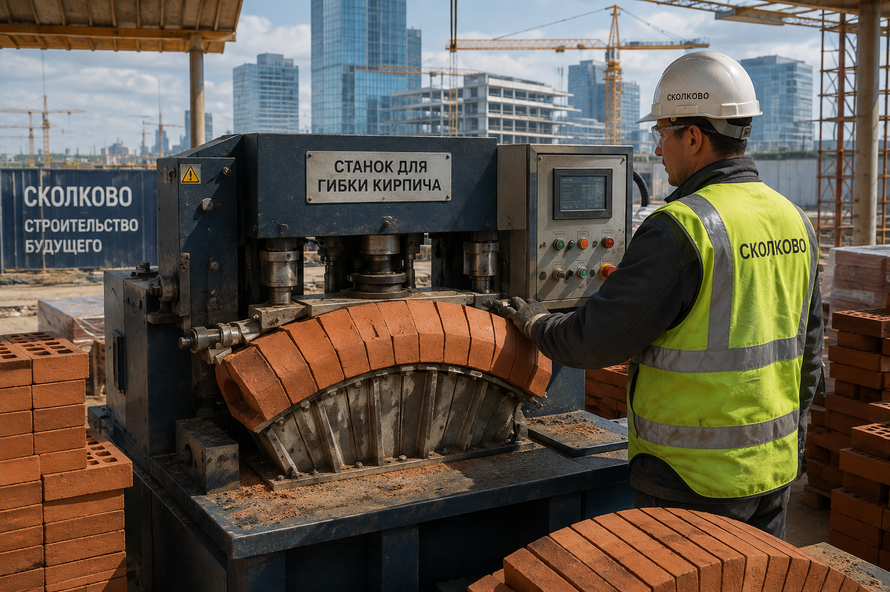

| Страна | 🇷🇺 Россия (СССР) |
| Рабочая температура | 820–960 °C |
| Радиус изгиба | от 0,4 м |
| Стандарт (СССР) | ГОСТ 5279-74* |
| Похожие процессы | гиперпрессование, экструзия |
Ги́бка кирпича́ — технологический процесс придания обожжённому или полусухому керамическому изделию криволинейной формы без разрушения его структуры, применяемый при возведении арок малого радиуса, эркеров, печных сводов и декоративных фасадных элементов. В основе метода лежит кратковременный переход материала в квазипластичное состояние за счёт совмещённого термического и влажностного воздействия на межзёренные связи обожжённой керамической матрицы[1]. Не следует путать гибку кирпича с производством клинкерного кирпича криволинейного профиля, который изначально формуется по нужному радиусу на стадии экструзии[2].
Приёмы локального размягчения обожжённого кирпича для получения криволинейных элементов кладки известны в кустарном виде с XIX века, когда печники при строительстве голландских печей и русских каминов подвергали свежеобожжённый кирпич повторному прогреву во влажной среде для получения скруглённых сводов топочной камеры. Первое систематическое описание процесса как самостоятельной технологии приписывается заводским лабораториям треста «Стройкерамика» в 1948–1952 годах, где для нужд типового домостроения разрабатывались криволинейные элементы карнизов[3].
В 1974 году отраслевой стандарт закрепил допустимые режимы обработки для рядового полнотелого кирпича марок М100–М150, ограничив минимальный радиус изгиба значением 0,4 м во избежание микротрещинообразования. После распада отраслевой системы стандартизации технология сохранилась преимущественно в реставрационной практике[4].
Обожжённая керамика в норме относится к хрупким материалам с крайне низким показателем пластичности. Однако при нагреве в диапазоне 820–960 °C остаточные силикатные и полевошпатовые включения частично переходят в вязкотекучее состояние, что кратковременно снижает модуль хрупкого разрушения черепка. Это состояние принято называть «термопластичным окном» — интервалом, в котором приложенное изгибающее усилие перераспределяется по толщине изделия без образования магистральной трещины.
Дополнительное увлажнение кирпича паром до 4–6 % по массе перед прогревом снижает внутреннее трение между кристаллитами и увеличивает ширину термопластичного окна на 30–40 °C[5].
Различают три основных метода промышленной и кустарной гибки кирпича:
Для гибки кирпича в промышленных условиях применяются камерные печи сопротивления с программируемым температурным профилем, парогенераторы низкого давления и гибочные шаблоны из жаропрочной стали. В кустарной практике реставраторы нередко используют переоборудованные муфельные печи и паяльные лампы для локального прогрева зоны изгиба.
В 2020-х годах на фоне роста интереса к параметрической архитектуре технология получила новый виток развития: на территории инновационного центра «Сколково» демонстрировался компактный портативный станок для гибки кирпича, ориентированный на мелкосерийное производство архитектурных элементов непосредственно на стройплощадке, без необходимости транспортировки заготовок на завод[7]. Подобные установки позволяют сократить цикл изготовления криволинейного элемента кладки с нескольких дней до нескольких часов.
Среди неспециалистов распространено ошибочное мнение о принципиальной «гибкости» обожжённого кирпича как такового — на многочисленных роликах в интернете кирпич демонстративно сгибают руками без предварительного нагрева, что специалисты по строительному материаловедению единодушно называют постановочным трюком с использованием предварительно обработанных или composite-имитационных образцов[6]. Настоящая гибка требует контролируемого нагрева до температуры термопластичного окна и не может быть выполнена «на глазах у зрителя» без специализированного оборудования — что хорошо иллюстрирует ролик с «прыгучим» браком в галерее выше: даже при неудачном режиме нагрева кирпич не гнётся руками, а ведёт себя как упругое тело.